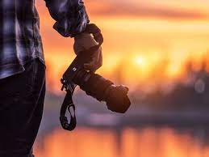

Below I'll go over a little bit of the things that I do daily.
Web Developer

Web development is the building and maintenance of websites; it’s the work that happens behind the scenes to make a website look great, work fast and perform well with a seamless user experience.
Web developers, or ‘devs’, do this by using a variety of coding languages. The languages they use depends on the types of tasks they are preforming and the platforms on which they are working.
Web development skills are in high demand worldwide and well paid too – making development a great career option. It is one of the easiest accessible higher paid fields as you do not need a traditional university degree to become qualified.
The field of web development is generally broken down into front-end (the user-facing side) and back-end (the server side).
Work Out

We have all heard it many times before - regular exercise is good for you, and it can help you lose weight. But if you are like many Americans, you are busy, you have a sedentary job, and you haven't yet changed your exercise habits. The good news is that it's never too late to start. You can start slowly, and find ways to fit more physical activity into your life. To get the most benefit, you should try to get the recommended amount of exercise for your age. If you can do it, the payoff is that you will feel better, help prevent or control many diseases, and likely even live longer.
Everyone can benefit from physical activity. For most people, it is possible to begin exercising on your own at a slow pace. If you have never exercised before, start with a 10-minute period of light exercise. A brisk walk every day is a good first exercise. Slowly increase how hard you exercise and for how long.
Photography
Photography is the art, science, and practice of creating durable images by recording light or other electromagnetic radiation, either electronically by means of an image sensor, or chemically by means of a light-sensitive material such as photographic film.
In today’s digital world, photographers use state-of-the-art cameras and sophisticated software to create stunning images. But photography is not just about high-tech tools. The heart of photography is the creative process, and the skill and artistry of the photographer.
Anyone with a camera can take a picture. But to create truly great images, you need to understand the principles of photography, and have a creative eye and a sense of composition. With practice, you can develop your own unique style, and become a better photographer.